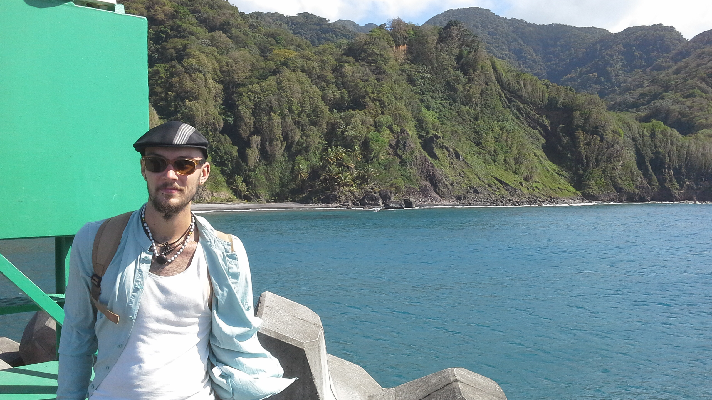

I am a senior honors student at the University of Iowa majoring in Anthropology (with an emphasis on Archaeology), French, and minoring in Geographic Information Science (GIS). I take an active role in the many opportunities provided by the faculty to begin personal research and while I am not directly aiding a faculty member I have numerous projects of my own. After a year of studying abroad in the French Overseas Departments of Martinique and Guadeloupe, I developed an intense passion for the culture, history, and prehistory there which has continued to inspire my work. Despite there being no faculty members studying what I am interested in, I have found a home in the Department of Geographical and Sustainability Sciences learning techniques of GIS and remote sensing with an aim to continue studying these in a doctorate program while finding new ways to apply these technologies to archaeological research.
This will begin later this year when I will receive funding to return to the Antilles to take Lidar scans of archaeological sites and petroglyphs using a "DIY" lidar unit I have constructed. With the resulting data I will be able to perform analyses and begin to investigate the spatial patterns of the sites and the engraved rocks they contain which will eventually become the content of future academic articles. My other research projects include digitization of archaeological records and maps from before the advent of modern computer technology, translation of French Creole poetry into English, and studying human influence and error in archaeological excavation. In my free time I write one act plays, music, and poetry; play, sing, and dance in musical groups such as Steel drum bands and Afro-Cuban folkloric music groups, and enjoy fine rum, wine, beer, whiskey, and cigars.